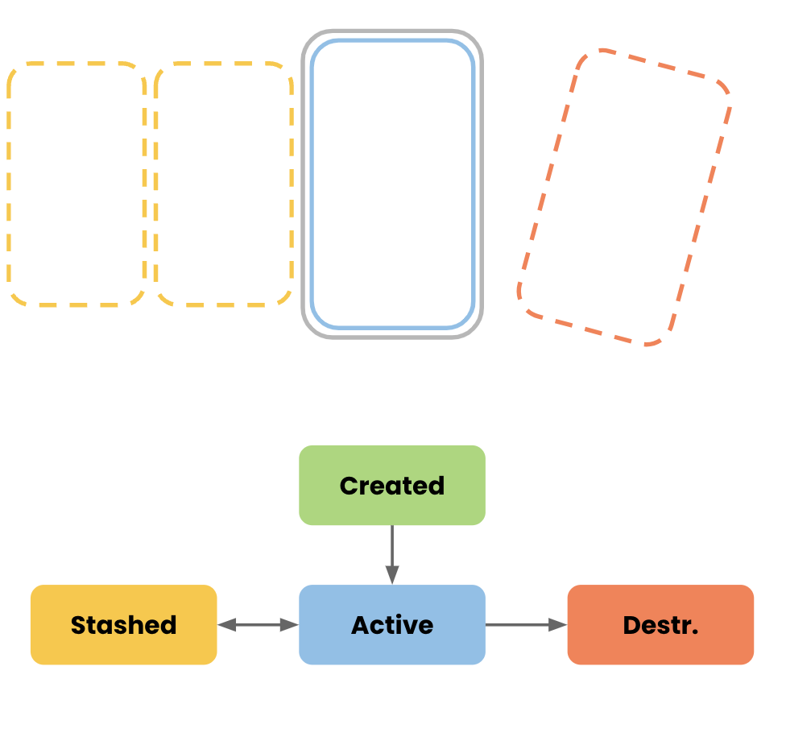

Before you begin
In the previous codelab we've seen how to navigate using Appyx. Now we're going to leverage the power of Appyx transition handlers.
What you'll do
- Model the animation with states
- Associate the states with UI properties
- Use a custom transition handler
What you'll build

Access the code
Clone the repo and open the CustomAnimation project.
git clone git@github.com:bumble-tech/appyx-codelabs.git
This tutorial and the TODOs will help you add great transitions between screens.
If at any point you're feeling stuck, you can always check out the solution inside the project.
Check our official page for the latest release.
Relevant pages from the Appyx project page:
In this example we're using a BackStack. This defines 4 states for a child:
CREATEDACTIVESTASHEDDESTROYED
The diagram below illustrates the transitions from one state to the next:

Relevant pages from the Appyx project page:
When navigating with Appyx, we can animate any UI property that we can represent with a Compose Modifier.
It's very easy to do so! In this case, we'll want scale, offset, and alpha animations. Let's add the following inside CustomTransitionHandler:
private data class Props(
val scale: Float = 1f,
val offset: Offset = Offset.Zero,
val alpha: Float = 1f
)
Next, let's define some actual values representing our key states.
The first thing we'll do is crossfade between states.
How properties map to states
Let's start off with creating different props instances:
private val created = Props()
private val active = created.copy(alpha = 1f)
private val stashed = active.copy(alpha = 0f)
private val destroyed = stashed
Read alpha values as a percentage, where 0 = 0% (hidden), 1 = 100% (completely visible).
Here we're saying that when an element is
CREATEDorACTIVE, it should be visibleSTASHEDorDESTROYEDit should be invisible
Now let's define the mappings between the current state and the UI properties:
private fun BackStack.State.toProps(): Props =
when(this) {
BackStack.State.CREATED -> created
BackStack.State.ACTIVE -> active
BackStack.State.STASHED -> stashed
BackStack.State.DESTROYED -> destroyed
}
Animating property changes
Let's add this to our Modifier. We're mapping the current state (it inside the animateFloat block) to a props value (.toProps())
override fun createModifier(
modifier: Modifier,
transition: Transition<BackStack.State>,
descriptor: TransitionDescriptor<NavTarget, BackStack.State>
): Modifier = modifier.composed {
val alpha by transition.animateFloat(
transitionSpec = floatSpec,
targetValueByState = { it.targetProps().alpha },
label = ""
)
this
.alpha(alpha)
}
To use the newly updated TransitionHandler open up your RootNode and replace
rememberBackstackSlider()
with
remeberCustomTransitionHandler()
Your app should look like this:

This was neat and simple, but let's kick it up a notch!
When we're creating a new item let's push it in from the bottom of the screen.
Change your toProps function:
private fun BackStack.State.toProps(height: Float): Props =
when (this) {
BackStack.State.CREATED -> created.copy(offset = Offset(0f, 2f * height))
BackStack.State.ACTIVE -> active
BackStack.State.STASHED -> stashed
BackStack.State.DESTROYED -> destroyed
}
Add this to your Modifier.
override fun createModifier(
modifier: Modifier,
transition: Transition<BackStack.State>,
descriptor: TransitionDescriptor<NavTarget, BackStack.State>
): Modifier = modifier.composed {
val height = descriptor.params.bounds.height.value // we get access to width & height here
...
val offset by transition.animateOffset(
transitionSpec = transitionSpec,
targetValueByState = { it.toProps(height).offset },
label = ""
)
this
.offset {
IntOffset(
x = (offset.x * density).roundToInt(),
y = (offset.y * density).roundToInt()
)
}
.alpha(alpha)
}
Your app should look like this:

For our final trick, let's make our screen explode when it's destroyed.
To do this, when it transitions to DESTROYED we'll scale it up.
Change the properties like this:
private val created = Props(alpha = 0.5f)
private val active = created.copy(alpha = 1f, scale = 1f)
private val stashed = active.copy(alpha = 0f, scale = 0.6f)
private val destroyed = stashed.copy(scale = 1.25f)
Add this to your Modifier.
override fun createModifier(
modifier: Modifier,
transition: Transition<BackStack.State>,
descriptor: TransitionDescriptor<NavTarget, BackStack.State>
): Modifier = modifier.composed {
...
val scale by transition.animateFloat(
transitionSpec = floatSpec,
targetValueByState = { it.toProps(height).scale },
label = ""
)
this
.offset {
IntOffset(
x = (offset.x * density).roundToInt(),
y = (offset.y * density).roundToInt()
)
}
.scale(scale)
.alpha(alpha)
}
That's it!
Launch your app. It should look like this:
🎉 Congrats for completing this codelab! 🎉
Check out other code labs to learn more about Appyx.